自己紹介
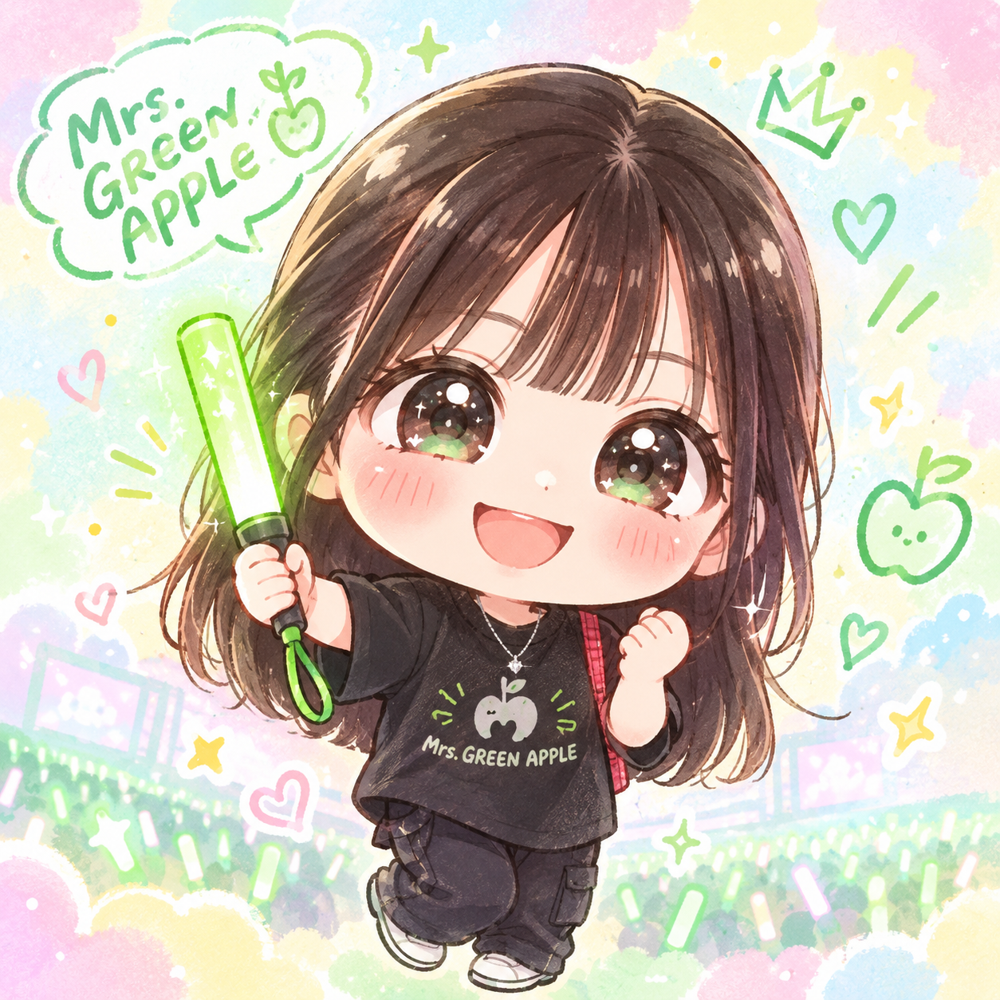
About Me
はじめまして。ポートフォリオをご覧いただきありがとうございます。
大学を卒業してから一年間、医療事務として働いてきましたが、専門的なスキルを身につけ、自分にできることの幅を広げたいと考え、Web制作の学習を始めました。
現在はHTML・CSSを中心に学びながら、Webサイトの制作に取り組んでいます。 制作では、一つひとつの工程を丁寧に進め、細かな部分まで確認することを大切にしています。
まだ学ぶことは多くありますが、これまでの社会人経験も活かしながら知識と技術を磨き、見る人や使う人に寄り添ったWebサイトを制作できるよう、成長していきたいと考えています。
大学を卒業してから一年間、医療事務として働いてきましたが、専門的なスキルを身につけ、自分にできることの幅を広げたいと考え、Web制作の学習を始めました。
現在はHTML・CSSを中心に学びながら、Webサイトの制作に取り組んでいます。 制作では、一つひとつの工程を丁寧に進め、細かな部分まで確認することを大切にしています。
まだ学ぶことは多くありますが、これまでの社会人経験も活かしながら知識と技術を磨き、見る人や使う人に寄り添ったWebサイトを制作できるよう、成長していきたいと考えています。
趣味
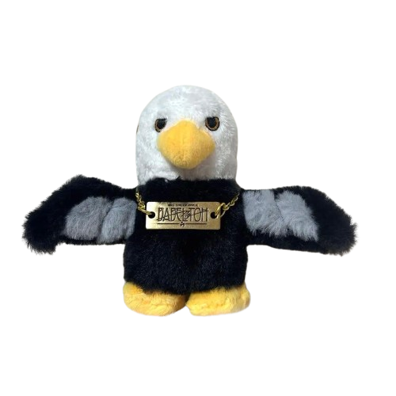
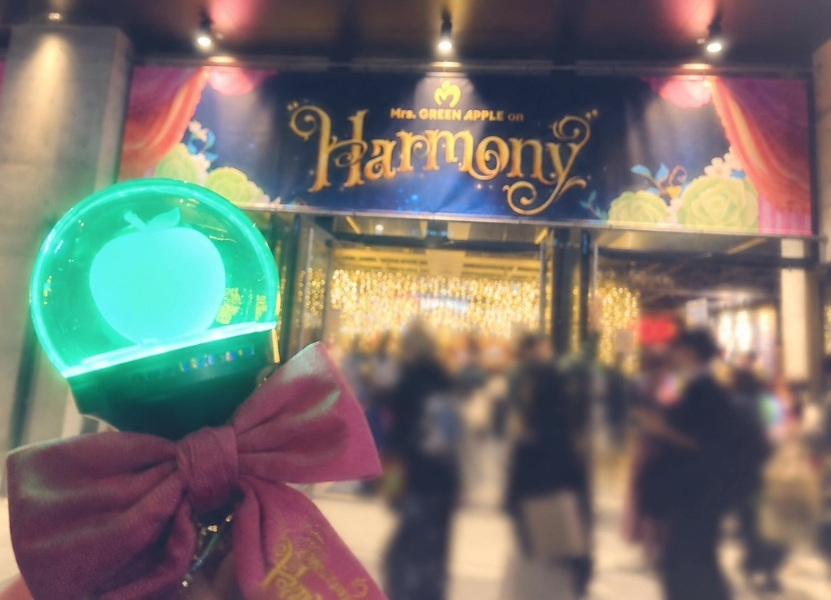
初めて当たったライブ。初めての横浜
☆ ライブ参戦 ☆
Mrs. GREEN APPLEが大好きでライブは注釈席を勝ち取って複数公演参戦しています!
2025年のドームツアーは福岡と大阪、東京で計5公演参戦しました！国立も2days、先着でもぎ取りました♡
今のところスナイパー席多めなので、アリーナ席に行ってみたいと思いながら当たらない抽選に応募し続けています…。
移動は基本夜行バスで、北海道と沖縄以外の陸続きならどこにでも行きます☆
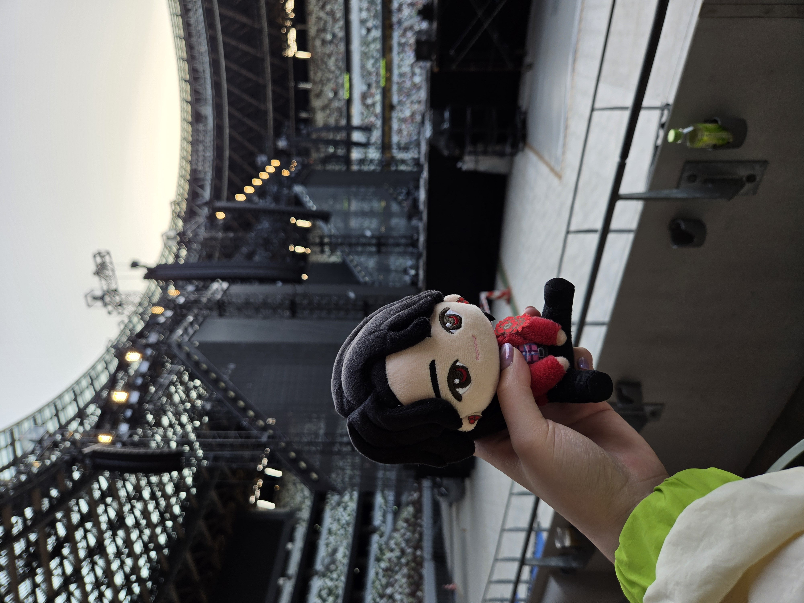
前日の19時に取り、そのまま夜行バスに飛び乗った時の国立競技場
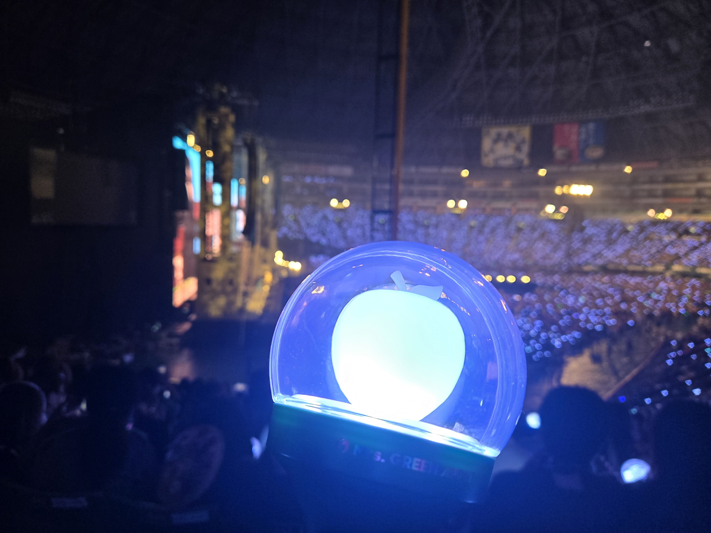
三日前に取り、猛ダッシュで退勤したその夜、夜行バスで行った福岡のみずほPayPayドーム
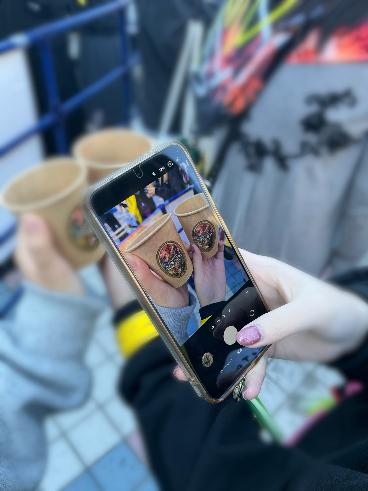
前日に従妹と連番で勝ち取った京セラドーム公演のFC限定ブース

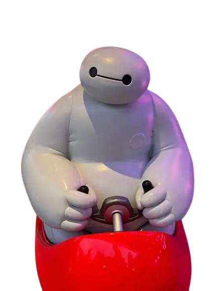
♡ Disney ♡
グリーティングでダッフィー沼に落ちて、大学生の頃は3か月に2回のペースでパークに行っていました！
同じ日に4回会いに行くぐらい好きです♡
写真はお気に入りを厳選しました。ドナルドはハロウィンシーズンに行ったのでオバケポーズをしています👻
アトラクションはベイマックスのハッピーライドが一番好きで、閉演まで一日中いれます♡ちなみに、ミセスとコラボもしてるアトラクションです！
写真はお気に入りを厳選しました。ドナルドはハロウィンシーズンに行ったのでオバケポーズをしています👻
アトラクションはベイマックスのハッピーライドが一番好きで、閉演まで一日中いれます♡ちなみに、ミセスとコラボもしてるアトラクションです！
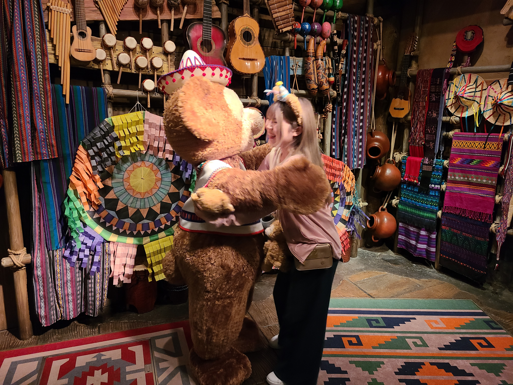

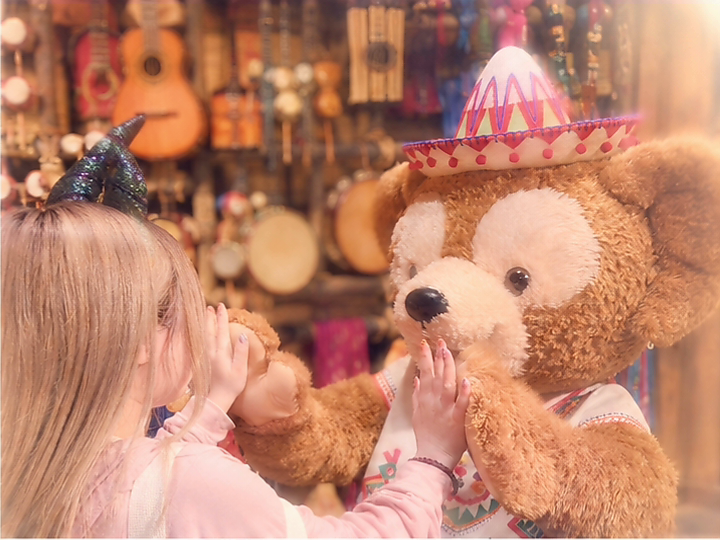
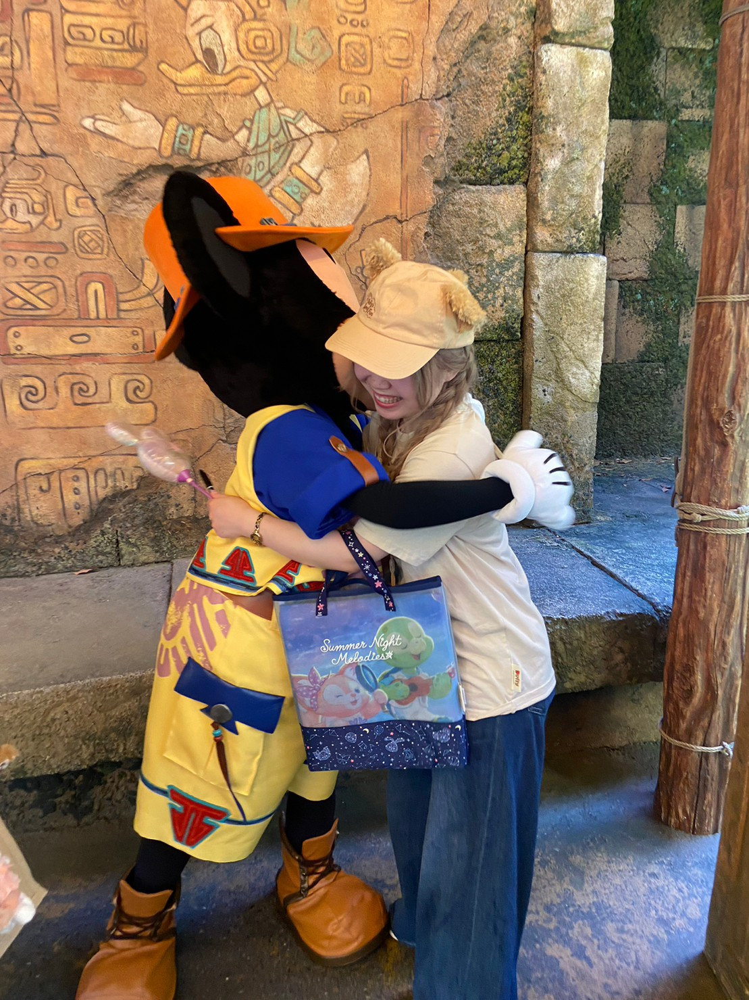
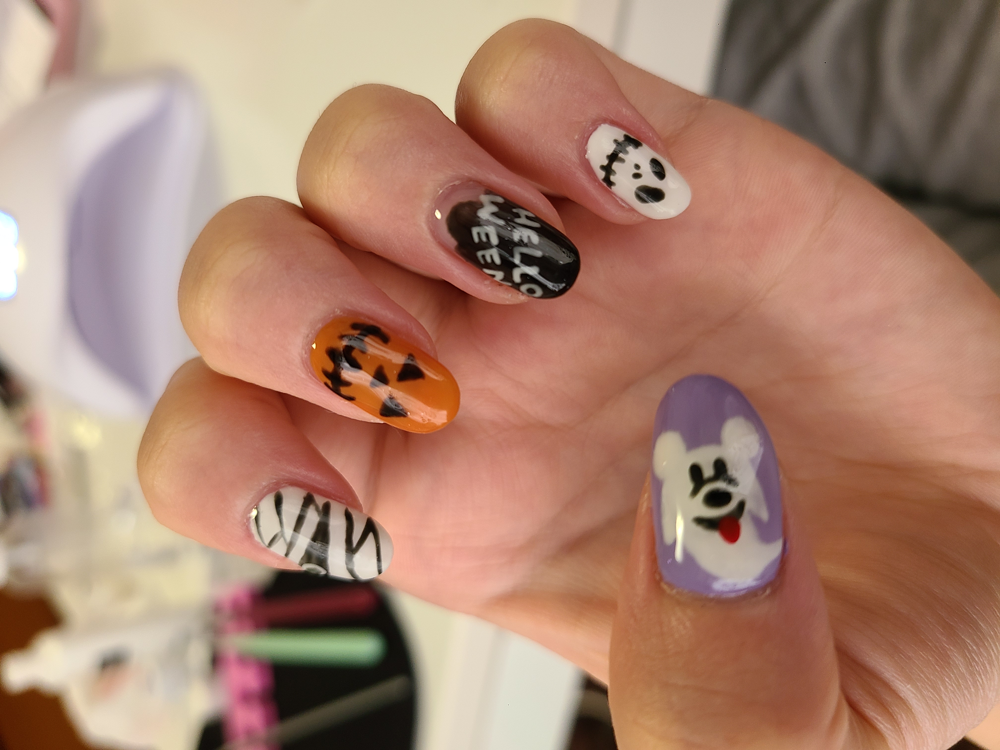

ディズニーに行く前で気合が入りまくりのハロウィンネイル
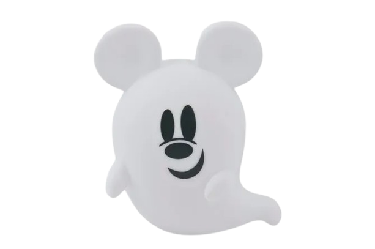
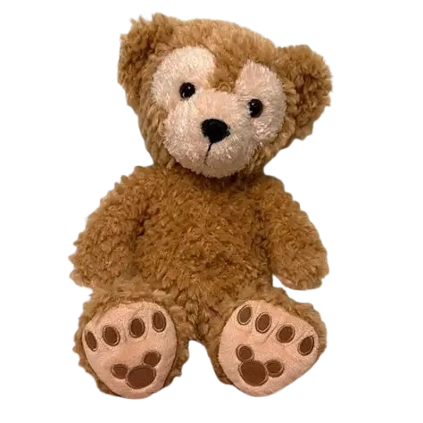
♪ ネイル ♪
従姉に勧められてからセルフネイルを始め、大学時代は少し凝ったこともしていました☆ ネイルを自由にしたくて、バイト先をドン・キホーテに決めるぐらいにはハマっていました(笑)
社会人になってからは、医療事務だったので大人しめのマグネットネイルにしていたのですが、 患者さんから「爪可愛いねえ、ちょっと見せて」なんて言ってもらったりもしました。話のネタになってくれて、やっていてよかったです♪

チョコが描きたくなったバレンタインネイル

ミセスのロゴと、あるライブの世界観をイメージ
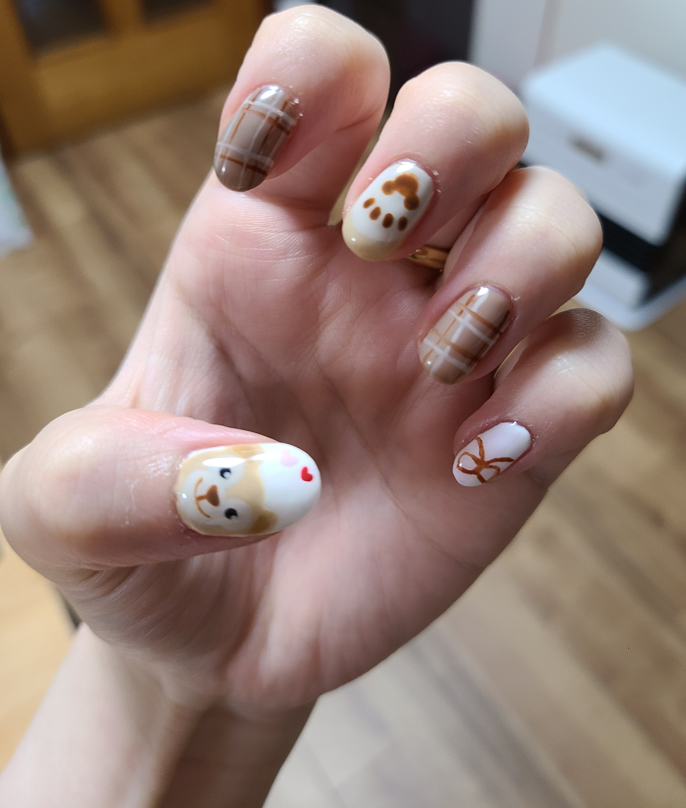
ダッフィーに挑戦したものの、顔が大きくなってしまう…。